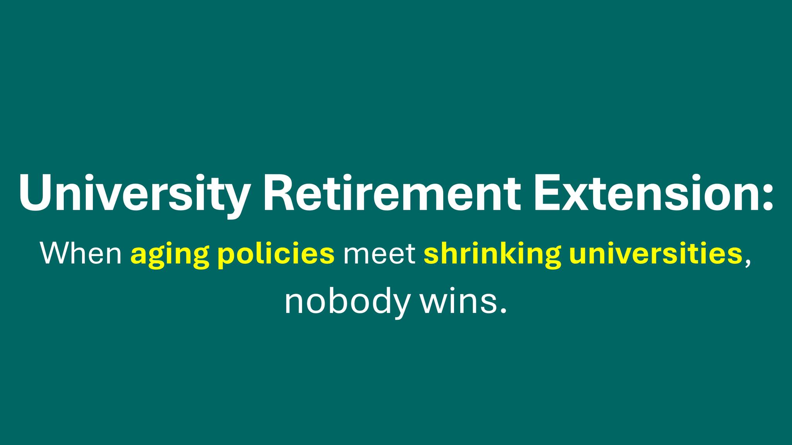

การต่ออายุราชการอาจมาแน่ แต่จะเป็นเพียงแผ่นปะในมหาวิทยาลัยที่กำลังเข้าสู่ภาวะหดตัวถาวร
{kind=link}

บทความนี้เสนอภาพรวมที่ค่อนข้างชัดว่าแนวโน้ม การต่ออายุราชการ ในมหาวิทยาลัยไทยน่าจะมาแน่ แต่จะมาแบบ selective ไม่ใช่ต่ออายุแบบเหมารวม เพราะงบไม่พอ เด็กหาย ระบบการเงินสั่นคลอน และรัฐไม่มีทางแบกรับทุกคนได้พร้อมกัน
ผู้เขียนชี้ว่ากลุ่มที่มีโอกาสได้ต่ออายุมากกว่าคนอื่นคือกลุ่มที่ผูกกับกฎหมายเก่า กลุ่มผู้บริหารหรือ “ลายเซ็น” ของมหาวิทยาลัย และบางคนที่สถาบันยังต้องใช้หน้า ชื่อ หรือเครือข่ายของเขาอยู่ ขณะที่พนักงานมหาวิทยาลัยรุ่นใหม่กลับมีโอกาสน้อยมาก และนั่นทำให้ปัญหานี้ไม่ใช่แค่เรื่องอายุ แต่เป็นเรื่องของ โครงสร้างอำนาจและความเหลื่อมล้ำ ในระบบ
จุดคมที่สุดของบทความนี้คือการผูกเรื่องการต่ออายุราชการเข้ากับบริบทใหญ่ของ ภาวะหดตัวถาวรของมหาวิทยาลัยไทย ผู้เขียนมองว่าการขาดนักศึกษาเรื้อรัง หลักสูตรที่เปิดแล้วมีเด็กน้อย งบที่หายไปตามจำนวนเด็ก และการเปลี่ยนรุ่นผู้บริหารที่ยังไม่ปักหลัก กำลังทำให้มหาวิทยาลัยเข้าสู่ยุคที่ไม่อาจแก้ด้วยวิธีประคองคนเดิมไว้อย่างเดียวได้อีกแล้ว
ต่ออายุแบบ selective อาจประคองบางคน แต่ไม่แตะปัญหาเชิงระบบ
ผู้เขียนอธิบายว่าการต่ออายุมีแนวโน้มจะถูกใช้กับบางกลุ่มที่รัฐหรือมหาวิทยาลัย “จำเป็นต้องใช้” เช่น ผู้บริหาร ดาวเด่น หรือคนที่มีเครือข่ายดึงงบและทรัพยากรได้ แต่จะไม่เกิดกับทุกคน เพราะต้นทุนสูงเกินไปและขัดกับข้อจำกัดทางการเงินของระบบโดยตรง
ในแง่นี้ การต่ออายุจึงเป็นเพียง แผ่นปะ ไม่ใช่ทางรอด เพราะมันช่วยยืดอายุการใช้งานของบางตำแหน่ง แต่ไม่ได้แก้ปัญหาเรื่องเด็กหาย งบลด หรือโครงสร้างอาชีพที่ไม่ดึงดูดคนรุ่นใหม่
การประคองคนเก่าไว้นานขึ้น อาจยิ่งปิดทางคนรุ่นใหม่และเร่งการล้มของระบบ
บทความนี้ชี้ผลกระทบตรง ๆ ว่า หากมีการต่ออายุเยอะ ระบบจะยิ่งปิดตำแหน่งไม่ให้คนรุ่นใหม่เข้า innovation ก็หายตาม และสองมาตรฐานระหว่างอาจารย์เก่ากับอาจารย์รุ่นใหม่จะชัดขึ้นเรื่อย ๆ
ตรงนี้ทำให้การต่ออายุไม่ได้เป็นแค่เรื่องสิทธิของผู้ใกล้เกษียณ แต่เป็นคำถามเรื่อง การถ่ายเลือดใหม่ ของสถาบัน หากเลื่อนการเปลี่ยนผ่านออกไปเรื่อย ๆ ระบบก็อาจกลับมาพังหนักกว่าเดิมเมื่อคนที่ต่ออายุไว้ต้องเกษียณอีกรอบพร้อมกัน
มหาวิทยาลัยกำลังเจอ disruption ที่ไม่เกี่ยวกับ aging society อย่างเดียว
ผู้เขียนชี้ว่า การต่ออายุอาจารย์ไม่ได้แตะโครงสร้างใหญ่ของประเทศและของมหาวิทยาลัยเลย เพราะในโลกข้างหน้า online, blended, industry-led education รวมถึง AI ที่ทำ TA, grading, tutoring และ lecture ได้ จะเปลี่ยน landscape ของการอุดมศึกษาอย่างลึกซึ้ง
นั่นทำให้ปัญหาไม่ได้อยู่ที่ว่าคนสูงวัยควรทำงานต่อหรือไม่ แต่คือระบบมหาวิทยาลัยยังมีโมเดลที่ยั่งยืนหรือเปล่า เมื่อบริษัทจำนวนมากเริ่มไม่มองปริญญาในบางสายงาน และบางประเทศอย่างญี่ปุ่นเริ่มยุบมหาวิทยาลัยไปแล้วจริง ๆ
คำเตือนสุดท้ายคืออาชีพอาจารย์ไม่ใช่อาชีพมั่นคงอีกต่อไป
ข้อสรุปของบทความนี้รุนแรงแต่ชัด คือผู้เขียนยังย้ำกับลูกเหมือนเดิมว่า “อย่ามาเป็นอาจารย์ ถ้าไม่รวยจริง” เพราะเงินเดือนสู้เอกชนไม่ได้ ความมั่นคงไม่มีจริง KPI หนักขึ้นทุกปี และเส้นทางเติบโตแคบลงท่ามกลางจำนวนเด็กที่ไม่เพิ่ม
ประโยคปิด Short-term gain for some, long-term collapse for all จึงสรุปใจความได้ครบว่า มาตรการต่ออายุอาจทำให้บางคนได้ประโยชน์ระยะสั้น แต่หากไม่ปฏิรูปโครงสร้างใหญ่ของมหาวิทยาลัยไทย มันอาจเร่งการล่มสลายระยะยาวมากกว่าจะช่วยกู้ระบบ